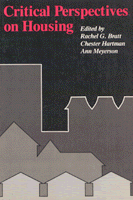

<body bgcolor="#FFFFFF" text="#000000" link="#0000FF" vlink="#CC0000" alink="#CC0000"><center><hr width="350" size="1" align="center" noshade>Essays that attempt to dispel illusions about housing problems and set forth concrete proposals for change<hr width="350" size="1" align="center" noshade><p><a href="https://cdcshoppingcart.uchicago.edu/Cart/ChicagoBook.aspx?ISBN=9780877223955&&PRESS=temple" target="_top">Buy this book!</a> | <a href="https://cdcshoppingcart.uchicago.edu/Cart/Cart.aspx?PRESS=temple" target="_top">View Cart</a> | <a href="https://cdcshoppingcart.uchicago.edu/Cart/Cart.aspx?PRESS=temple" target="_top">Check Out</a></p><p></p></center><!--none//--><h1>Critical Perspectives on Housing</h1>
<h3>edited by Rachel G. Bratt, Chester Hartman and Ann Meyerson</h3>
<P>cloth 0-87722-395-5 $44.95, Jan 86, <FONT COLOR=#990033>Out of Stock Unavailable</FONT>
<br>paper 0-87722-396-3 $24.95, Jan 86, <FONT COLOR=#990033>Out of Stock Unavailable</FONT>
<BR> 600 pp
</P><BLOCKQUOTE><I>"A solid collection of progressive analyses, critiques, and programmatic ideas (from other countries as well as the United States), especially important in defining and disseminating a coherent left postion in the housing arena as the housing crisis looms ever larger."</I>
<br>&#151<b><I>Planners Network</I></b><I></I></BLOCKQUOTE>
<p>The overwhelming majority of writing done in the field of housing today is based on the erroneous assumption that either the nation�s housing problems are not overly serious or long-lasting or that adjustments in market mechanisms and slightly modified government housing policies can correct the existing problems. <I>Critical Perspectives on Housing</I>, a collection of thirty-three articles, sixteen of which have been specifically written for the volume or are being published for the first time, attempts to dispel those illusions and set forth concrete proposals for change.
<p>Written by leading scholars and activists in the country today, the articles examine such diverse elements of the housing picture as the construction industry, gentrification, the homeless, abandonment, the market�s ability to serve minorities and women, the income tax system, rural housing problems, suburbanization, and the actions of the Reagan Administration. The articles are divided into three sections: The Workings of the Private Housing Market; The Role of the State; and Strategies for Change.
<p><I>Critical Perspectives on Housing</I> moves beyond the analytic perspective, however, by advancing a range of alternative approaches to help solve the housing crisis. These approaches are augmented by a survey of current and historical approaches taken by other governments and societies to address the crucial problems of their people�s housing needs.
<BR>&nbsp;<H2>About the Author(s)</H2>
<table><tr><td valign="top"><img src="/tempress/authors/383_au1.gif" height="90" width="75"></td><td width="100%" valign="middle"><p><b>Rachel G. Bratt</b> is Assistant Professor in the Department of Urban and Environmental Policy at Tufts University. She is author of <I><A HREF="1301_reg.html" TARGET="_top">A Right to Housing: Foundation for a New Social Agenda</A></I> (edited with Michael E. Stone and Chester Hartman) and <I><A HREF="493_reg.html" TARGET="_top">Rebuilding a Low-Income Housing Policy</A></I>, both published by Temple.</P></td></tr></table><P><b>Chester Hartman</b> is currently a Fellow at the Institute for Policy Studies in Washington, D.C.</P>
<P><b>Ann Meyerson</b> is Assistant Professor in the Metropolitan Studies Program at New York University.</P>
<P>Contributors: Emily Achtenberg, Peter Marcuse, Kim Hopper, Jill Hamberg, Michael Stone, Joe Feagin, Barry Checkoway, Tom Schlesinger, Mark Erlich, Richard Appelbaum, John Gilderbloom, David Bartelt, Ronald Lawson, Jose Ramon Sanchez, Gary Orfield, Dolores Hayden, Cushing Dolbeare, Jim Kemeny, Robert Schur, Arthur Collings, Linda Kravitz, John Atlas, Peter Dreier, John Cowley, Kathy McAfee, Seth Borgos, Robert Kolodny, Tony Schuman, Steve Schifferes, and the editors.</P>
<BR><H2>Subject Categories</H2>
<p><A HREF="/tempress/urban.html" TARGET="_top">Urban Studies</a>
<BR><A HREF="/tempress/political.html" TARGET="_top">Political Science and Public Policy</a>
<BR><A HREF="/tempress/sociology.html" TARGET="_top">Sociology</a>
</p>
<p align="center"><a href="https://cdcshoppingcart.uchicago.edu/Cart/ChicagoBook.aspx?ISBN=9780877223955&&PRESS=temple" target="_top">Buy this book!</a> | <a href="https://cdcshoppingcart.uchicago.edu/Cart/Cart.aspx?PRESS=temple" target="_top">View Cart</a> | <a href="https://cdcshoppingcart.uchicago.edu/Cart/Cart.aspx?PRESS=temple" target="_top">Check Out</a></p><p><font face="Arial" size="1"><a href="copyright.html" onMouseOver="window.status='Web Copyright Policy';return true;" onMouseOut="window.status=''" title="Web Copyright Policy">&copy;</a> 2015 <a href="http://www.temple.edu" target="new" onMouseOver="window.status='Link to Temple University home page';return true;" onMouseOut="window.status=''" title="Link to Temple University home page">Temple University</a>. All Rights Reserved. http://www.temple.edu/tempress/titles/383_reg.html</font></p>